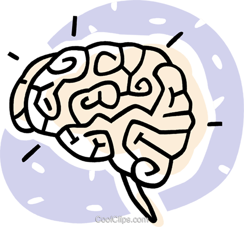

<div *ngIf="user; then connect; else ask_to_connect"></div>
<ng-template #connect>
  <div class="body-main-page">
    <svg class="svg" width="100%" height="90%">
      <text class="title-main-page" x="50%" y="60%" text-anchor="middle">Quiz Groupe B</text>
    </svg>
    <div class="buttons-placement">
      <button mat-raised-button color="accent" class="button-margin" [routerLink]="['/play-categories-page']">Jouer</button>
      <button mat-raised-button color="basic" *ngIf="user.isAdmin == true" class="button-margin" [routerLink]="['/manage-page']">
        Gérer les quiz
      </button>
    </div>
  </div>
</ng-template>
<ng-template #ask_to_connect>
  <div class="connect">
    <mat-card>
      <button  mat-raised-button color="primary" class="connect-button" [routerLink]="['/login-page']">
        Se connecter
      </button>
      <button  mat-raised-button color="primary" class="connect-button" [routerLink]="['/sign-in-page']">
        S'inscrire
      </button>
    </mat-card>
    </div>
  
</ng-template>
